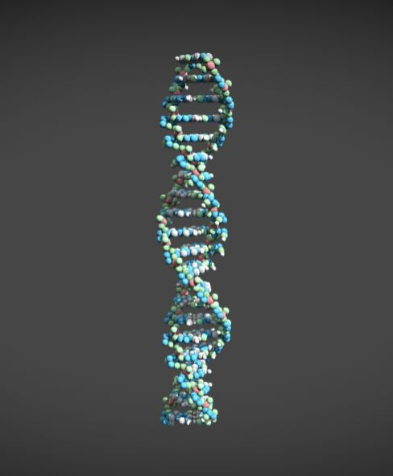
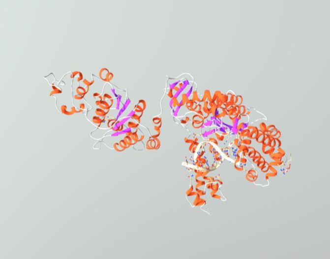
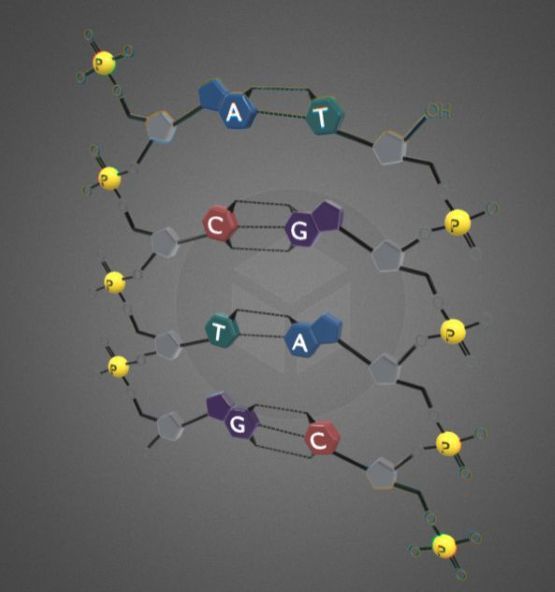
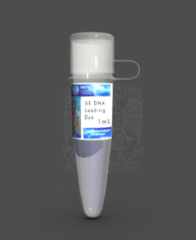
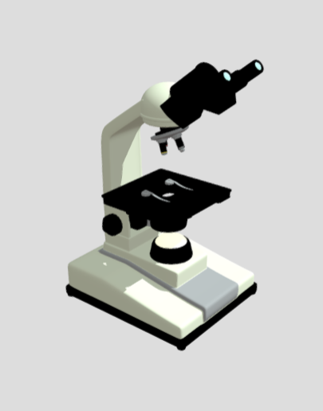
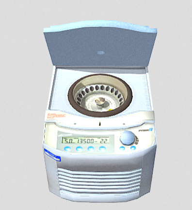
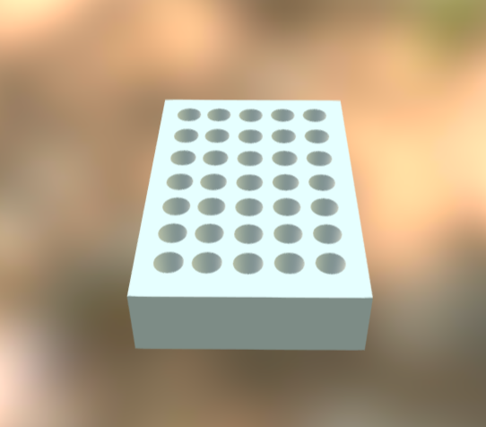
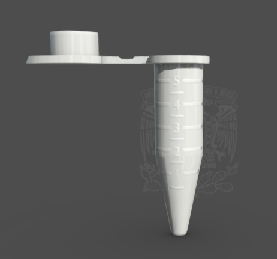
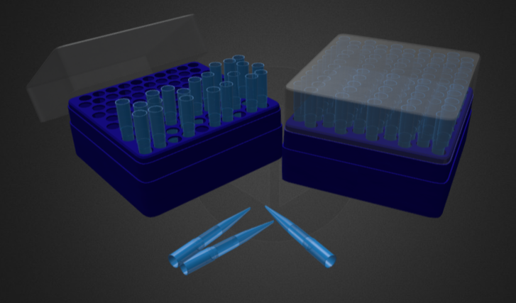
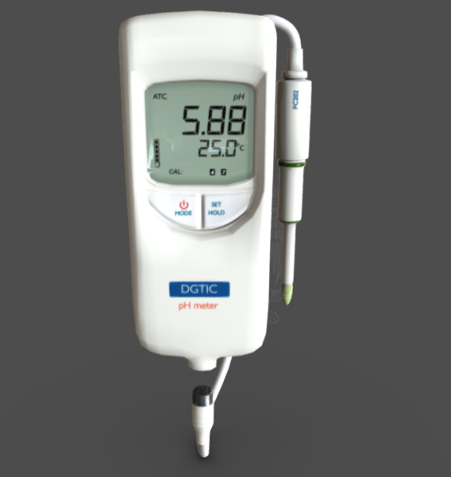

Deoxyriboneucleic Acid (DNA)
This is the sample containing the specific target gene or region of genetic material you want to replicate.

Taq polymerase
This is a heat-stable enzyme that builds the new DNA strands by physically linking loose genetic building blocks together.

Deoxynucleotide Triphosphates (dNTPs)
The building blocks. These are the loose bases (A, T, C, and G) that Taq polymerase uses to construct the new DNA copies.

PCR buffer
This chemical solution maintains the optimal pH and salt conditions (often including magnesium ions) required for the Taq polymerase enzyme to function stably.

Microscope
produces magnified visual images of objects too small to be seen with the naked eye

Centrifuge
A mechanical device that uses rapid rotation to separate components of varying densities within a liquid or gas

Pipette
A foundational laboratory tool used to measure, transfer, and dispense small, precise volumes of liquid

PCR Machine
A Polymerase Chain Reaction (PCR) machine selectively amplifies specific segments of DNA by rapidly cycling through precise temperature changes. This creates millions of identical copies of a target sequence, providing enough material for genetic analysis, forensic testing, or pathogen detection.

Microtube Holder
Microcentrifuge tubes (also called Eppendorf tubes or "microfuge" tubes for short) are commonly used to hold and mix small amounts of liquid

Lab tube
An open-topped cylindrical container used in scientific and medical settings to hold, mix, or heat small quantities of substances

Pipette box holders
laboratory organizers designed to keep serological pipettes, canisters, and micropipette tip boxes safely stored and easily accessible

pH meter
An electronic instrument used to measure the acidity or alkalinity (hydrogen-ion activity) of a water-based solution on a scale of 0 to 14